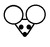
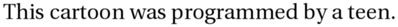
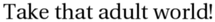
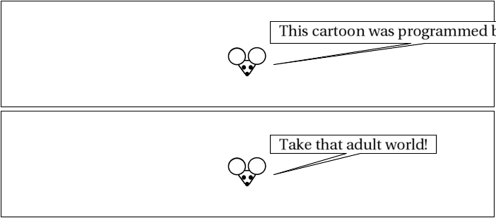

*../interpret_script_pl"interpret_script.pl" runs:
Script specification
panels 2 panel 1 mouse says This cartoon was programmed by a teen. panel 2 mouse says Take that adult world!
Interpretation follows:
panels 2
Panel parameters and layout (currently ignored)
panel 1
Panel - (parameters currently ignored)
mouse says This cartoon was programmed by a teen.
Speech implies presence: speaker is "mouse".
Speaker says: "This cartoon was programmed by a teen."
panel 2
Panel - (parameters currently ignored)
mouse says Take that adult world!
Speech implies presence: speaker is "mouse".
Speaker says: "Take that adult world!"
Resulting XML definition:
<cartoon rowformat="1" width="700" panel-h="150" character-base-url="http://www.vivtek.com/toonbots/characters/"> <panel> <character name="mouse"/> <dialog who="mouse">This cartoon was programmed by a teen.</dialog> </panel> <panel> <character name="mouse"/> <dialog who="mouse">Take that adult world!</dialog> </panel> </cartoon>
*../instantiate_pl"instantiate.pl" runs, but doesn't really do anything yet.
*../build_panel_make_pl"build_panel_make.pl" runs.
Scene default:
<scene id="default" panels="1-2"> <frame tag="default-1" id="1" panels="1"> <character name="mouse" tag="default-1"/> </frame> <frame tag="default-2" id="2" panels="2"> <character name="mouse" tag="default-1"/> <character name="mouse" tag="default-2"/> </frame> </scene>
Panel Makefile is as follows:
# Panel Makefile generated Mon Jun 23 16:03:31 PDT 2008 by Toon-o-Matic t2 # Contains no serviceable parts. Batteries not included. # Void in NH, VT, and U.S. Minor Outlying Islands. all: panel-1.svg panel-2.svg panel-1.svg: character-mouse-default-1-1.svg dialog-1-1.svg perl build_panel_g.pl panel-1.xml 1 1 > panel-1-g.svg perl merge_svg.pl "panel 1" panel-1-g.svg character-mouse-default-1-1.svg dialog-1-1.svg > panel-1.svg placement-panel-1.xml: draw-character-mouse-default-1.xml perl place_characters.pl "panel 1" 698 150 draw-character-mouse-default-1.xml > placement-panel-1.xml panel-2.svg: character-mouse-default-2-2.svg dialog-2-2.svg perl build_panel_g.pl panel-2.xml 1 157 > panel-2-g.svg perl merge_svg.pl "panel 2" panel-2-g.svg character-mouse-default-2-2.svg dialog-2-2.svg > panel-2.svg placement-panel-2.xml: draw-character-mouse-default-2.xml perl place_characters.pl "panel 2" 698 150 draw-character-mouse-default-2.xml > placement-panel-2.xml draw-character-mouse-default-1.xml: character-mouse-default-1.xml perl build_character.pl this 698 150 character-mouse-default-1.xml > draw-character-mouse-default-1.xml character-mouse-default-1-1.svg: draw-character-mouse-default-1.xml placement-panel-1.xml perl draw.pl draw-character-mouse-default-1.xml 698 150 placement-panel-1.xml > character-mouse-default-1-1.svg dialog-1-1.info: dialog-1-1.xml character-mouse-default-1-1.svg perl render_text.pl dialog-1-1.xml dialog-1-1.png identify -format '<graphic size="%b" height="%h" width="%w" geometry="%g" file="%f"/>' dialog-1-1.png > dialog-1-1.info dialog-1-1.svg: dialog-1-1.info perl draw_caption.pl dialog-1-1.xml dialog-1-1.info 698 150 0 dialog-1-1.png > dialog-1-1.svg dialog-2-2.info: dialog-2-2.xml character-mouse-default-2-2.svg perl render_text.pl dialog-2-2.xml dialog-2-2.png identify -format '<graphic size="%b" height="%h" width="%w" geometry="%g" file="%f"/>' dialog-2-2.png > dialog-2-2.info dialog-2-2.svg: dialog-2-2.info perl draw_caption.pl dialog-2-2.xml dialog-2-2.info 698 150 0 dialog-2-2.png > dialog-2-2.svg draw-character-mouse-default-2.xml: character-mouse-default-2.xml perl build_character.pl this 698 150 character-mouse-default-2.xml > draw-character-mouse-default-2.xml character-mouse-default-2-2.svg: draw-character-mouse-default-2.xml placement-panel-2.xml perl draw.pl draw-character-mouse-default-2.xml 698 150 placement-panel-2.xml > character-mouse-default-2-2.svg*../build_character_pl"build_character.pl" runs on character-mouse-default-1.xml:
<character name="mouse" tag="default-1"/>Retrieving character definition for mouse; URL is http://www.vivtek.com/toonbots/characters/mouse.xml
Retrieving image from http://www.vivtek.com/toonbots/characters/mouse.bmp

Final character definition:
<character name="mouse" label="mouse" rel-h="40"> <draw file="image-mouse-1.bmp" type="image"/> </character>
Built character:
<character name="mouse" tag="default-1" rel-h="40" rel-w="" height="60" width="64.3137254901961"> <draw file="image-mouse-1.bmp" type="image" rel-h="100" rel-w="100" height="60" rel-x="0" rel-y="0" w="164" h="153" width="64.3137254901961"/> </character>
*../place_characters_pl"place_characters.pl" places characters for panel 1:
<placement> <character name="mouse" x="316.843137254902" y="60"/> </placement>
*../draw_pl"draw.pl" runs on draw-character-mouse-default-1.xml:
SVG built:
<g x="316.843137254902" y="60" w="64.3137254901961" h="60"> <image x="316.843137254902" y="60" width="64.3137254901961" height="60" xlink:href="image-mouse-1.bmp"/> </g>
*../render_text_pl"render_text.pl" renders "dialog-1-1.xml":
<dialog who="mouse" ref-who="character-mouse-default-1-1.svg">This cartoon was programmed by a teen.</dialog>
*../draw_caption_pl"draw_caption.pl" runs:
Graphics info:
<graphic width="398" file="dialog-1-1.png" geometry="2500x320+21+5" height="27" size="24067"/>
<g> <polyline style="stroke:black; stroke-width:1; fill:white" points="381.156862745098,29 799.156862745098,29 799.156862745098,60 600.156862745098,60 386.156862745098,90 580.156862745098,60 381.156862745098,60 381.156862745098,29"/> <image x="10" y="2" width="398" height="27" xlink:href="dialog-1-1.png" transform="translate(381.156862745098,29)"/> </g>
*../build_panel_g_pl"build_panel_g.pl" runs, producing:
<g transform="translate(1,1)"/>
*../merge_svg_pl"merge_svg.pl" runs to produce panel 1:
<g transform="translate(1,1)"><g w="64.3137254901961" y="60" h="60" x="316.843137254902"> <image width="64.3137254901961" y="60" xlink:href="image-mouse-1.bmp" x="316.843137254902" height="60"/> </g> <g> <polyline points="381.156862745098,29 799.156862745098,29 799.156862745098,60 600.156862745098,60 386.156862745098,90 580.156862745098,60 381.156862745098,60 381.156862745098,29" style="stroke:black; stroke-width:1; fill:white"/> <image width="398" y="2" transform="translate(381.156862745098,29)" xlink:href="dialog-1-1.png" x="10" height="27"/> </g> </g>
*../build_character_pl"build_character.pl" runs on character-mouse-default-2.xml:
<character name="mouse" tag="default-2"/>
Built character:
<character name="mouse" tag="default-2" rel-h="40" rel-w="" height="60" width="64.3137254901961"> <draw file="image-mouse-1.bmp" type="image" rel-h="100" rel-w="100" height="60" rel-x="0" rel-y="0" w="164" h="153" width="64.3137254901961"/> </character>
*../place_characters_pl"place_characters.pl" places characters for panel 2:
<placement> <character name="mouse" x="316.843137254902" y="60"/> </placement>
*../draw_pl"draw.pl" runs on draw-character-mouse-default-2.xml:
SVG built:
<g x="316.843137254902" y="60" w="64.3137254901961" h="60"> <image x="316.843137254902" y="60" width="64.3137254901961" height="60" xlink:href="image-mouse-1.bmp"/> </g>
*../render_text_pl"render_text.pl" renders "dialog-2-2.xml":
<dialog who="mouse" ref-who="character-mouse-default-2-2.svg">Take that adult world!</dialog>
*../draw_caption_pl"draw_caption.pl" runs:
Graphics info:
<graphic width="215" file="dialog-2-2.png" geometry="2500x320+21+5" height="22" size="13821"/>
<g> <polyline style="stroke:black; stroke-width:1; fill:white" points="381.156862745098,34 616.156862745098,34 616.156862745098,60 508.656862745098,60 386.156862745098,90 488.656862745098,60 381.156862745098,60 381.156862745098,34"/> <image x="10" y="2" width="215" height="22" xlink:href="dialog-2-2.png" transform="translate(381.156862745098,34)"/> </g>
*../build_panel_g_pl"build_panel_g.pl" runs, producing:
<g transform="translate(1,157)"/>
*../merge_svg_pl"merge_svg.pl" runs to produce panel 2:
<g transform="translate(1,157)"><g w="64.3137254901961" y="60" h="60" x="316.843137254902"> <image width="64.3137254901961" y="60" xlink:href="image-mouse-1.bmp" x="316.843137254902" height="60"/> </g> <g> <polyline points="381.156862745098,34 616.156862745098,34 616.156862745098,60 508.656862745098,60 386.156862745098,90 488.656862745098,60 381.156862745098,60 381.156862745098,34" style="stroke:black; stroke-width:1; fill:white"/> <image width="215" y="2" transform="translate(381.156862745098,34)" xlink:href="dialog-2-2.png" x="10" height="22"/> </g> </g>
*../draw_panels_pl"draw_panels.pl" runs:
<svg height="309" width="702"> <rect height="309" width="700" style="fill: white"/> <polyline transform="" style="fill:none; stroke:black; stroke-width:1" arrow="" points="1,1 699,1 699,151 1,151 1,1"/> <polyline transform="" style="fill:none; stroke:black; stroke-width:1" arrow="" points="1,157 699,157 699,307 1,307 1,157"/> </svg>
*../merge_svg_pl"merge_svg.pl" runs to produce the final cartoon:
<svg width="702" height="309"> <rect width="700" style="fill: white" height="309"/> <polyline transform="" points="1,1 699,1 699,151 1,151 1,1" style="fill:none; stroke:black; stroke-width:1" arrow=""/> <polyline transform="" points="1,157 699,157 699,307 1,307 1,157" style="fill:none; stroke:black; stroke-width:1" arrow=""/> <g transform="translate(1,1)"/> <g transform="translate(1,1)"><g y="60" w="64.3137254901961" h="60" x="316.843137254902"> <image y="60" width="64.3137254901961" xlink:href="image-mouse-1.bmp" x="316.843137254902" height="60"/> </g> <g> <polyline style="stroke:black; stroke-width:1; fill:white" points="381.156862745098,29 799.156862745098,29 799.156862745098,60 600.156862745098,60 386.156862745098,90 580.156862745098,60 381.156862745098,60 381.156862745098,29"/> <image y="2" width="398" transform="translate(381.156862745098,29)" xlink:href="dialog-1-1.png" x="10" height="27"/> </g> </g> <g transform="translate(1,157)"/> <g transform="translate(1,157)"><g y="60" w="64.3137254901961" h="60" x="316.843137254902"> <image y="60" width="64.3137254901961" xlink:href="image-mouse-1.bmp" x="316.843137254902" height="60"/> </g> <g> <polyline style="stroke:black; stroke-width:1; fill:white" points="381.156862745098,34 616.156862745098,34 616.156862745098,60 508.656862745098,60 386.156862745098,90 488.656862745098,60 381.156862745098,60 381.156862745098,34"/> <image y="2" width="215" transform="translate(381.156862745098,34)" xlink:href="dialog-2-2.png" x="10" height="22"/> </g> </g> </svg>
The final result (drumroll please!)
